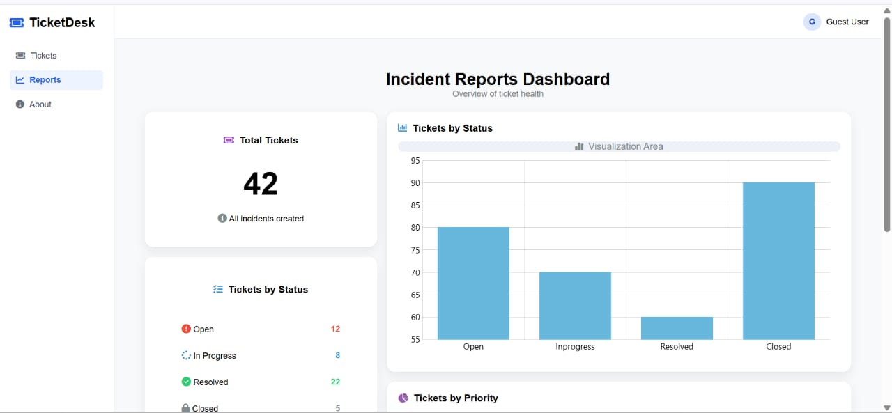
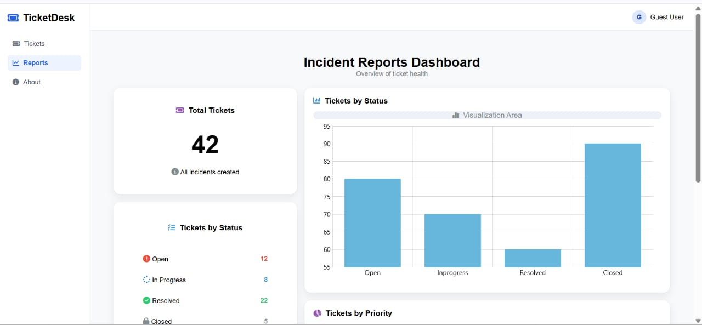
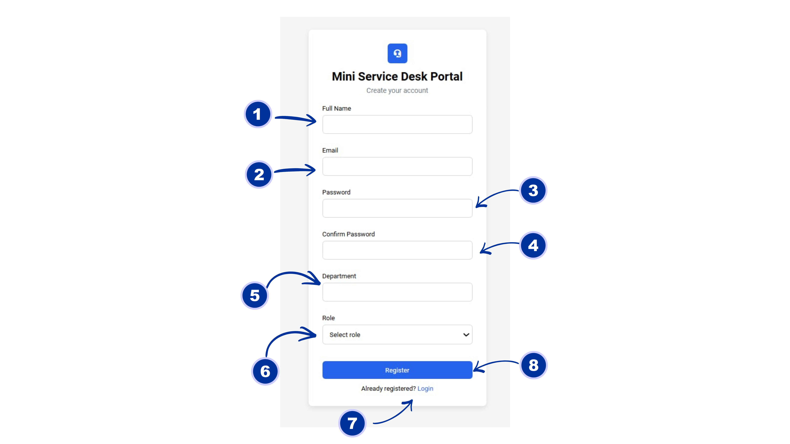
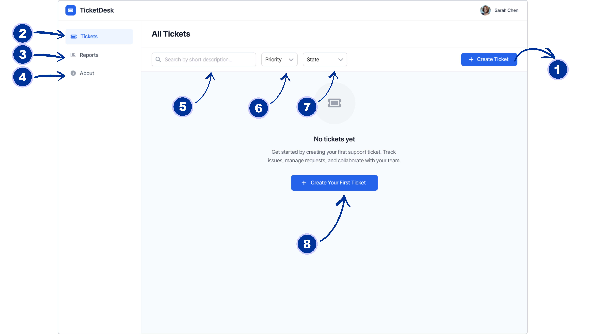
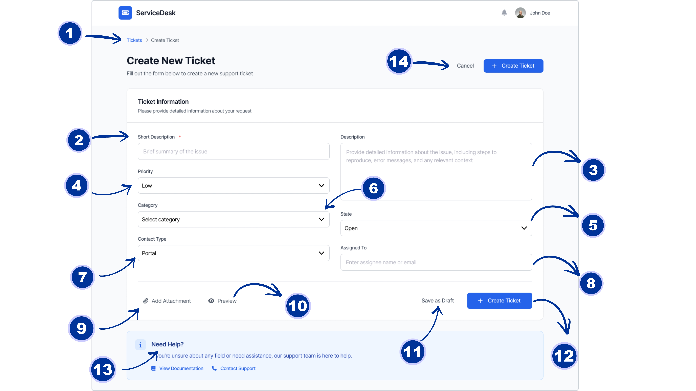
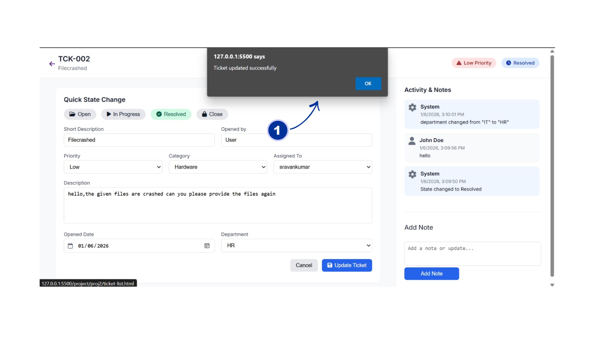
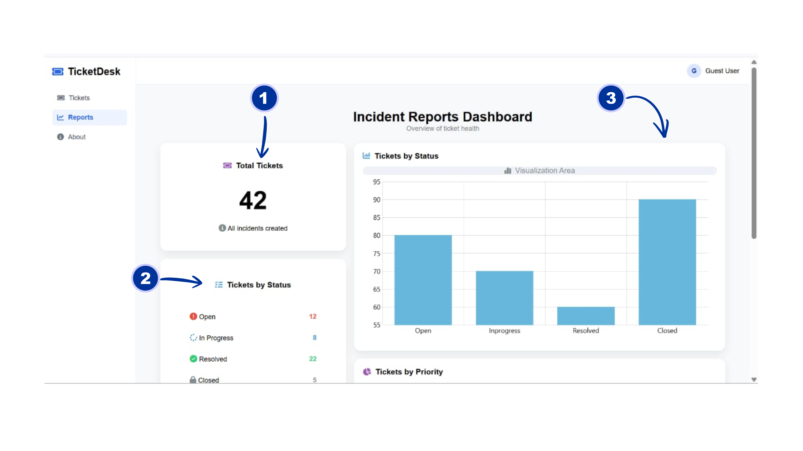

Complete Overview / Service Desk


 

The TicketDesk project is a web-based Service Desk / Ticket Management System designed to simplify the process of reporting, tracking, and resolving IT-related issues. The system provides a centralized platform where users can raise support tickets, monitor their status, and communicate effectively with the support team. Inspired by real-world ITSM tools like ServiceNow, TicketDesk focuses on usability, clarity, and structured workflow to ensure efficient issue management.
Centralized Ticket Management System TicketDesk provides a single, unified platform for users to create, view, and manage all their support tickets. This eliminates scattered communication and ensures every issue is properly recorded, tracked, and resolved within the system.
User-Friendly Ticket Creation Process The system allows users to raise tickets through a simple and structured form. Fields such as short description, detailed description, priority, category, and contact type ensure that complete and accurate information is captured for faster issue resolution.
End-to-End Incident Workflow TicketDesk follows a clear incident lifecycle, starting from ticket creation and moving through assignment, in-progress handling, and final resolution. This structured workflow improves transparency and helps both users and support teams understand the current status of each ticket.
Search and Filtering Capabilities Users can quickly locate tickets using the search bar and apply filters based on priority and state. These features significantly reduce the time spent navigating large ticket lists and improve productivity. Priority and State-Based Management Tickets can be categorized by urgency and current status, allowing critical issues to be addressed first. This ensures efficient resource allocation and aligns the system with IT Service Management (ITSM) best practices.
Dashboard-Oriented Interface The dashboard provides a clear overview of ticket activity and system usage. When no tickets are available, the system displays helpful guidance to encourage users to create their first ticket, improving onboarding and usability.system by creating their first support request.
Login Page
Full Name Input Field This field is where users enter their complete name. It helps to identify the person submitting or registering on the portal, ensuring personalized communication and tracking of their tickets.
Email Input Field Users provide their email address here. This is essential for account verification, receiving ticket updates, and communication from support staff.
Password Input Field This field is used to set a secure password when creating an account. It ensures that user data and tickets are protected and accessible only by authorized users.
Enter Portal Button This button submits the login form. Upon clicking, the system validates the provided information and grants access to the portal based on user credentials and role.
Register Page
Full Name Input Field This field is where users enter their complete name. It helps to identify the person submitting or registering on the portal, ensuring personalized communication and tracking of their tickets.
Email Input Field Users provide their email address here. This is essential for account verification, receiving ticket updates, and communication from support staff.
Password Input Field This field is used to set a secure password when creating an account. It ensures that user data and tickets are protected and accessible only by authorized users.
Confirm Password Input Field This field is used to confirm the password entered in the previous field. It helps prevent typos and ensures that the user has entered their desired password correctly.
Department Input Field Users select their department from this dropdown or input field. This helps categorize tickets based on organizational structure, allowing for targeted support and efficient routing.
Role Input Field Users select their role from this dropdown or input field. This helps determine the permissions and access levels within the portal, ensuring appropriate control over ticket management and system features.
Login Link If users already have an account, they can click this link to navigate to the login page instead of creating a new account.
Register Button This submits the registration form and creates the user account. It validates all input fields before allowing registration.
Tickets Dashboard
Create New Ticket
The Create Ticket button allows users to raise a new support ticket by submitting issue details such as description, priority, and category. This is the primary entry point for reporting a new problem or service request.
The Tickets section displays all created tickets in one place. Users can view ticket status, track progress, and manage their requests efficiently from this section.
The Reports section provides analytical insights into ticket data. It helps users and administrators understand trends, performance metrics, and overall service efficiency.
The About section gives an overview of the TicketDesk application, its purpose, features, and alignment with IT Service Management (ITSM) practices.
The Search Bar allows users to quickly find tickets by entering keywords related to the ticket’s short description, enabling faster access to relevant records.
The Priority filter helps users sort and view tickets based on urgency levels such as Low, Medium, or High, ensuring critical issues receive immediate attention.
The State filter allows users to filter tickets based on their current status, such as Open, In Progress, or Resolved, making ticket tracking easier.
The Create Your First Ticket button is displayed when no tickets exist. It guides new users to start using the system by creating their first support request.
Ticket Number Column Displays unique ticket identifiers (e.g., TCK-001). Clicking on a ticket number usually opens detailed information about that ticket.
Description Column Shows a brief summary of the issue or request reported in each ticket. This helps users quickly identify the nature of the ticket.
Priority Filter Dropdown Users can filter tickets by priority level, such as High, Medium, or Low, so they can focus on critical tickets first.
State Filter Dropdown Allows filtering tickets by their status: Open, In Progress, Resolved, etc. This aids in monitoring ticket progress and workload.
Opened By Column Shows the name of the user who created or submitted the ticket, helping identify ticket ownership.
Opened Date Field Displays the date when a ticket was created. This helps users track ticket history, prioritize work, and monitor how long issues have been pending.
Ticket Creating
The breadcrumb navigation ("Tickets > Create Ticket") shows the user's current location in the app and allows quick navigation back to the main Tickets list.
The Short Description field is a required text input where users provide a brief, concise summary of the issue or request for quick identification.
The Description field is a larger text area for providing detailed information about the issue, including steps to reproduce, error messages, and relevant context.
The Priority dropdown lets users select the urgency level of the ticket (e.g., Low, Medium, High, Critical) to indicate how quickly it needs attention.
The State dropdown sets the initial status of the ticket (typically "Open" for new tickets), indicating its current workflow stage.
The Category dropdown allows users to classify the ticket by type (e.g., Hardware, Software, Access Request) for better routing and reporting.
The Contact Type dropdown specifies how the request was submitted (e.g., Portal, Email, Phone) for tracking submission channels.
The Assigned To field enables users to enter the name or email of the support agent or team member to directly assign the ticket.
The Add Attachment option allows users to upload files (e.g., screenshots, logs, documents) relevant to the issue for better troubleshooting.
The Preview button provides a preview of how the ticket will appear after creation, helping users review before submission.
The Save as Draft button lets users save the partially filled form as a draft to complete and submit later.
The Create Ticket button (main action) submits the completed form to officially create and log the new support ticket in the system.
The Need Help? section offers quick access to assistance options, including viewing documentation or contacting support for guidance while filling the form.
The Cancel button discards any entered information and returns the user to the previous screen (typically the Tickets list) without creating a ticket.
Ticket Details / Edit

Ticket ID
The Ticket ID displays the unique reference number (TCK-002) for the incident. It helps users and support staff easily identify, track, and communicate about the specific ticket.
The Quick State Change buttons allow users to instantly update the ticket status to Open, In Progress, Resolved, or Closed, enabling faster workflow transitions without editing the full form.
The Priority field lets users define the urgency of the ticket (Low, Medium, or High). This helps the support team prioritize issues based on business impact.
The Opened By field shows the user who originally raised the ticket. This provides accountability and helps support agents know who to contact for clarification.
The Description field allows users to explain the issue in detail. Clear descriptions help support teams understand the problem and provide faster resolutions.
The Department field identifies which department the ticket belongs to (e.g., HR). This helps route the ticket to the correct team.
The Assigned To field indicates the support agent responsible for resolving the ticket. It ensures clear ownership of the issue.
The scroll bar enables users to navigate through long activity logs and notes without losing visibility of the main ticket details.
The Add Note button allows users or support staff to add updates, comments, or progress notes to the ticket without changing its core details.
The Priority and Status badges provide a quick visual summary of the ticket’s urgency and current state, improving readability at a glance.
The Opened Date shows when the ticket was created. This helps track response time and resolution timelines.
The Category field classifies the ticket type (e.g., Hardware). Proper categorization improves reporting and issue analysis.
The date picker icon allows users to easily select or modify the opened date using a calendar view.
The Update Ticket button saves all changes made to the ticket and updates the system with the latest information.

Incident Details Page
The confirmation alert notifies the user that the ticket has been updated successfully, ensuring feedback and confirmation of the action performed.
Dashboard / Reports
This Bargraph will be applied based on State
The Total Tickets card displays the total number of tickets created in the system, giving a quick overview of overall ticket volume.
The Tickets by Status summary lists ticket counts based on their current state (Open, In Progress, Resolved, Closed), helping track workload distribution.
The Tickets by Status bar chart visually represents ticket status data, making it easier to analyze trends and service performance.
This Piechart will be applied based on Priority
The Tickets by Priority summary shows the number of tickets under High, Medium, and Low priority categories, helping teams understand urgency distribution.
The Priority pie chart provides a visual breakdown of tickets by priority, enabling quick insights into which urgency level dominates the workload.